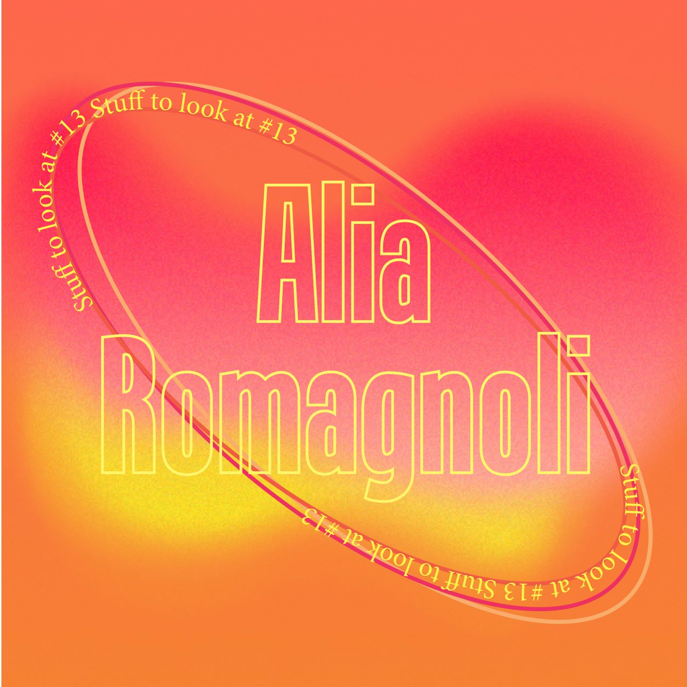

Latest articles
Alia Romagnoli
PHOTOGRAPHY
Taking mainly portraits, Alia Romagnoli is a photographer and art director with a very colorful universe. Often playing with monochromatic atmospheres, her pictures are full of different textures, focusing on colorful and outstanding makeups, flowers or clothing...
9 sountrack composers for a diverse representation
MUSIC

From the many underrated things that exist on this planet, I believe soundtrack composers have to be considered as one of them. I am always so surprised and amazed when I discover a new soundtrack composer. How come a vast majority of us have never heard their names although they play such an important role in creating a univers...
Fernanda Peralta
ILLUSTRAION
Fernanda Peralta is an illustrator based in Sao Paulo and first encountered her work going through a zine on Tarsila do Amaral for Common Threads press. I was completely seduced by her oniric universe close to vegetation and nature...
Ilyes griyeb
PHOTOGRAPHY

Ilyes Griyeb is a photographer living between Paris and Meknes. Mainly taking portraits of people, I find his images very powerful; it always looks like there is some kind of connection between his camera and the subject. There is a strong sense of respect...

Oralia Zuniga
ILLUSTRAION & GRAPHIC DESIGN

Today I wanted to talk about Oralia Zuniga, an illustrator and graphic designer based in Mexico. Her illustrations on instagram particularly caught my attention because they make me think of a sort of mosaic. Each illustration is usually composed of a main illustration...

Sampler man
ILLUSTRATION

In one of the releases of Advanced Creation magazine, I read an interview about a French artist that goes by the name of “Sampler Man” and discovered his crazy universe. Originally studying in applied art school, he started making his own fanzine, being very inspired by what was done in France at that time....
Welcome into the archives: Fela Kuti
MUSIC

Berlin 1979. The man in the middle of the stage is Fela Kuti. Singer, saxophonist, bandmast or politician, he has done it all and has revolutionised the world of music. He is known to have played an important role in the creation of Afrobeat and was very influential in the Nigerian political scene during that time...